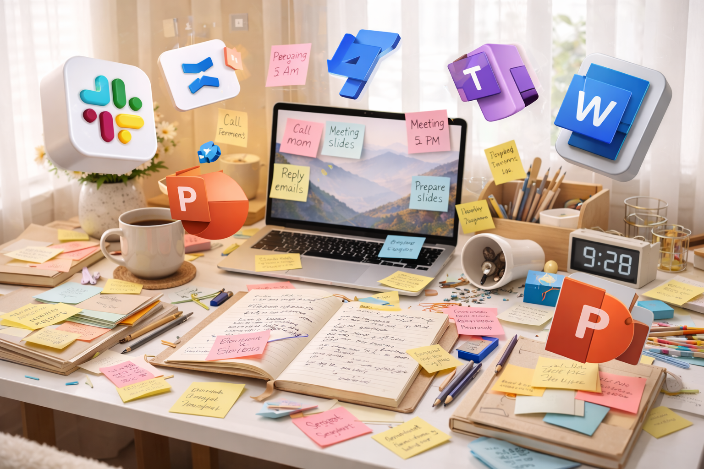

A still place for thinking. A powerful place for knowledge.
StillPoint is an excellent notes app first: open a Markdown page and write. When you want more, it grows into a Knowledge IDE—a connected workspace for navigating, shaping, visualizing, and extending everything you know.

A great notes app first. A Knowledge IDE when you want it.
StillPoint respects your work: no accounts, no subscriptions, and no cloud lock-in. Your notes live on your computer as plain text, ready to last. Journals, tasks, links, maps and AI are optional layers around the page—not requirements for using it.
A journal when you want it
Each day is a simple note page. Drop in to jot plans or capture what actually happened, without ever committing to a system.
Tasks stay with context
A task is just a checkbox in a note. StillPoint surfaces what is due without disconnecting it from the story behind it.
Links become a graph
Connections emerge naturally as you write. Days link to projects, notes to ideas, and the graph grows quietly in the background.
A safe haven from noisy tools
Modern work lives everywhere: email, chat, calendars, docs, and tickets. StillPoint does not replace them. It gives you a home base so you always know where to return when you need to remember.
StillPoint is a local-first workspace you can always return to — a journal when you want it, a connected brain when you need it.

Everything works around the page, without getting in its way.
The Markdown editor is the center. Quick jumpers, recent-page switching, heading pickers, and the command palette move you through the vault. Tasks and calendars keep action beside context. Mindmaps, backlinks, and the Link Navigator reveal structure and relationships. Every view works with the same plain files.
Write and move quickly
Edit readable Markdown, jump straight to pages and headings, revisit recent work, and keep your hands on the keyboard.
See the shape of your thinking
Use the mindmap, page map, backlinks, graph, and Link Navigator to understand both the structure inside a page and the connections across your vault.
Use assistance when it helps
Use optional in-app AI chats and focused one-shot tools while keeping your Markdown files as the source of truth.
Start with notes. Grow into a Knowledge IDE.
Free, local, and yours. Use only the quiet notebook, or turn on the deeper tools as your work asks for them. Build from source or grab a release on GitHub.
A thank you to Zim Wiki.
StillPoint exists because Zim proved the model. I used Zim for over a decade with thousands of folders and notes. It was bulletproof, stood the test of time, and never lost a page. That durability is the bar StillPoint aims to keep. As a young consultant in 2007, I found Zim Wiki and it changed how I worked. Finally, I had a tool that let me write naturally, link ideas together, and keep everything local. Over the years, Zim became my trusted brain for projects, research, and personal notes. When I started building StillPoint, I wanted to honor that legacy while improving the experience with modern design, performance, and features.